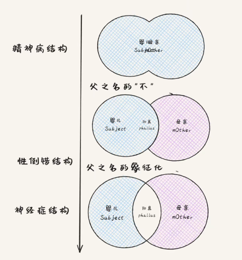
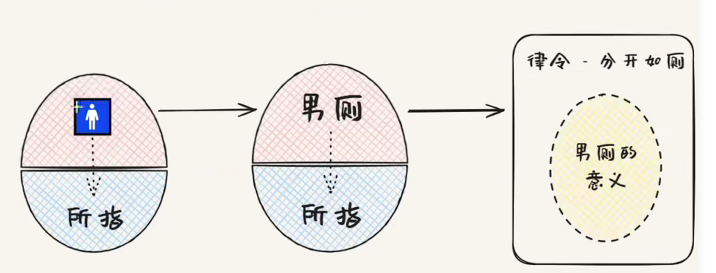
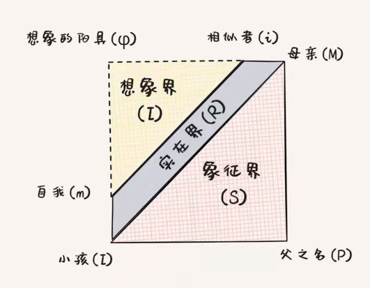
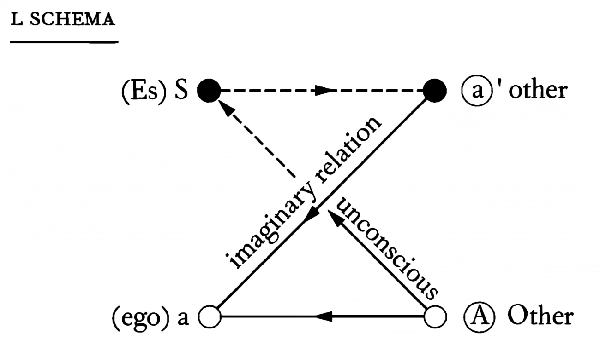

打破那面镜子：拉康理论初探
破碎，然后再通向完整。
可能是被哪个视频引了流，总之精神分析的内容不知何时起一直在我的主页上萦萦绕绕。最初只是对那些很帅很装 X 的黑话产生了好奇，但在了解的过程中愈来愈被拉康精巧的概念框架与新奇的心理视角所吸引。遂小做记录。
主体结构
拉康的病情学范畴 (临床结构)：精神病，性倒错，神经症。心理健康的主体不存在。
神经症 Neurosis
强迫型神经官能症 (Obsessional Neurosis)：荒诞的喜剧
强迫症主体面对母子共同体的分离创伤，选择接受并压抑自己的阉割 (castration)，并幻想着自己的整全。
强迫症主体认为自己能成为/拥有他者的欲望对象，并将其作为自己的欲望对象运作，建立起自己完满的幻想。这一误认源自幼时被动的享乐，进而产生了自己是母亲唯一欲望对象的错觉。
强迫症主体致力于完全控制，或是远离/压抑自己的欲望对象，从而避免幻想的破灭。他试图否认/消灭大他者 (Other) 并将其取而代之；或者说，他试图夺回大他者处的客体小 \(a\) (object \(a\))。
常见于传统性别定义中的男性。
癔症/歇斯底里症 (Hysteria)：飞蛾扑火的悲剧
癔症主体觉察到阉割与大他者的缺失，倾向于想象自己就是客体小 \(a\) 本身，帮助大他者获得满足。
癔症主体被 大他者的欲望之谜 困扰，她不断向 大他者 进行质疑与抗辩 (你到底想从我身上得到什么？我到底要怎样才能让你满足？)，从而确认自己是否真正成为了 大他者 的欲望对象，并使其获得了整全。然而，这与强迫症幻想自身的整全一样，是不可能实现的。
常见于传统性别定义中的女性。
性倒错 Perversion
RECAP：阉割，费勒斯与父之名。
- 阉割：由于在象征秩序中找不到对应物，想象性的事物只能作为一个「缺位」写进象征秩序。
- 费勒斯 (Phallus, 想象的阳具)：孩子为了使自己成为母亲欲望的对象而假定某人所必须具有的东西。常用于俄狄浦斯时期/性别语境下。更广泛的表述是对象小 \(a\)，即大他者的欲望对象。这一想象性的阳具在象征界中被标记为缺失而存在。
- 父之名 (name-of-the-Father)：象征的父亲。对主体进行阉割并颁布法令的存在 (乱伦禁忌)；只有意识到父之名才能进入正常的社会关系。父之名的介入：1) 说「不」。2) 对「不」的象征化。父之名作为大他者的锚定点而存在。
性倒错者完全把自己摆在客体地位，彻底沦为大他者的享乐工具。
与癔症主体不同，性倒错主体并非「想象」自己能帮助大他者获得满足 (大他者的欲望对癔症主体而言是个谜)，他的行动毫不迟疑地指向大他者的享乐。大他者的欲望对性倒错主体而言并非一个谜，而是永远可以实现的。
面对父之名的阉割，神经症主体被剥夺了享乐，但最终认同并内化了父之名 (所谓的「良知」)，使他们只能进行想象的僭越，而无法做出现实的行动。
性倒错主体则否认了父之名。阉割的未完成使性倒错者承受了过度享乐的痛苦，但父之名又并未被他们所内化，因此他们经常转向具象化的父之名来实行这个过程 — 通常是某个具体的人，如性倒错行为的伴侣。
快感并非来源于倒错行为本身，而来自于触碰到大他者化身的底线时对方所说的「不」；这使得性倒错主体终于感受到与大他者间的界限，从而实行了一次暂时的阉割。
精神病 Psychosis

对精神病而言，父之名不存在。这意味着母子共同体的关系一直得以维系。
同时，失去了父之名的锚定，象征性的大他者同样是不存在的。这使得想象界向象征界发生泄露：语言/思考对精神病主体是外显的，其也无法划定稳定的自我边界。
三界扭结
三界概述 Symbolic, Imaginary, Real
传统世界观 (象征界)：视点在外部，任何二元关系都是一种三元关系 (默认大他者在场)。
语言：象征界与想象界之交，能指 (signifier) 与所指 (signified) 之间的关系。
想象界：「我」与「对象」的二元关系。想象界由象征界所结构。
实在界：无法象征，无法想象，但又避无可避。有其创伤性特质，以主体难以预料到的方式返回。
三界中的死亡。
- 象征界：讣告，新闻，葬礼。
- 想象界：想象意义上的死亡 (想象自己的死亡/所爱之人的死亡)。
- 实在界：死亡「本身」。
自我 Ego
镜像阶段 (the Mirror Stage)：婴儿无法掌握自己的四肢，其自我体验是破碎的。但他能够在镜中观察到一个整全的镜像，并通过一些身体动作对这个完整的镜像进行操纵。
在婴儿对「镜像」的误认中，「自我」产生了 —— 「自我」与「镜像」是想象界最原初的二元关系。拉康意义下的「自我」以这种方式持续不断的结构而成，它本质上是对主体的异化。
即使脱离了婴儿阶段，处于象征界的主体仍会对某个镜像进行误认，并致力于让大他者认同这一镜像。从该镜像中诞生的「理想自我」(胜利的我，正确的我，在鄙视链处于高位的我) 使得主体产生虚假的「全能感」。
庸俗的心理学与成功学鼓吹对「自我」的增强，进而远离创伤；但这与真正的主体性相冲突。「自我」在避无可避的受到创伤后，只能僵死在原地，等待主体去认同一个新的镜像。
但主体本身已经承受了足够多的创伤，它能够作出真正的，现实的行动，不停留在「理想自我」带来的虚假幻想中。只有亲手杀死那个自恋的「自我」，直面主体的破碎，才能够使主体性得到成长。
认同 Identification
「镜像」与「自我」这一想象界中的二元关系，因为相似而具有「自恋 (narcissism)」，又因为异化而具有「侵凌性 (aggression)」。
因此，想象性认同通常是爱恨交织的，比如评论区对线 (意识到相似者的异化后试图将其摘除想象性认同)。象征性认同 (鄙视链，偶像崇拜，圈子文化) 借由进入象征秩序，虽然仍有想象的因素在，但摆脱了令人窒息的侵凌性。
现代人的所谓「自由」使其拥有了无数可能的标签 (星座，MBTI，乐子人？)，这使得想象性认同变得愈发廉价；经过严肃反思的，付诸行动的，坚实稳定的象征性认同 (父母，孩子，爱人) 反而显得越来越稀有。
符号学 Semiotics
索绪尔语言学理论：符号本身仅仅代表某个秩序下的差异；单个符号产生意义的唯一方式，仅仅在它和其他符号的差异中得到显现。符号由能指 (signifier) 与所指 (signified) 组成。索绪尔认为能指-所指对是牢牢绑定在一起的。
在接受父之名的阉割时，孩子接受了自己与菲勒斯之间的某种根本的差异性；由此象征界才得以展开。
拉康的突破：
- 能指与所指之间存在断裂。
- 能指与所指的结合是随意的。
- 能指优先于所指：对能指链的不断追溯产生出意义，这个过程被称为意指 (signification)。
在对能指链进行追溯的过程中，每一个能指所指向的所指间存在差异；将意指过程产生的意义稳固下来的是某个 锚定点/结扣点 (capitonnage)。

父之名 则是象征界中最重要的锚定点，稳固了象征秩序中的意义。排除了父之名的精神病主体缺乏了该锚定点，因此会产生语言中意义无休止的滑动 (疯言疯语)。
享乐与死亡驱力
享乐/原乐 (jouissance) 是一种「痛苦的快乐」，它试图僭越父之名，回到被阉割之前「成为菲勒斯」的状态；但这一抵达终究是不可能的。
死亡驱力 (death drive) 被弗洛伊德解释为生物的自毁/回到无机物的本能冲动 (生物性的死亡)，拉康则认为死亡驱力是返回母子共同体/成为母亲唯一欲望对象状态的驱力 (符号性的死亡)。
因此，死亡驱力指向的就是享乐的状态，超越快乐原则的状态。
- 快乐原则：命令主体少享乐的禁令/法则。
- 超越快乐原则：违反这一禁令，追求过量的快乐 (实际上被体验为痛苦)，即享乐。
享乐的无法抵达使得驱力不断驱使着主体去追寻某个失落的对象；这一驱力被主体感知到时，往往会转化为某种欲望。与其伴生的是许多幻象，防止主体跌入致命的享乐。但无论是欲望还是幻象，都无法触及到那无法抵达的享乐 (爱欲之核)，而只能围着它打转。
享乐的不可抵达维持了驱力的不断运行，进而保证了欲望的不断再生。
所谓的「穿透欲望与幻想」：与「正常，完整，有意义的活着」站在一侧，就相当于站在了欲望-幻象再生产循环的一侧，这些欲望本质上是他者的；与「无意义，死亡」站在一侧，才能将他者的欲望主体化，成为自己的欲望 —— 这就是明知不可为而为之，在意识到无意义后仍然坚持。
性别
注意：本节中的 阳具 指的均是 阳具能指，即 菲勒斯；并非生殖器官；实际上，阳具能指被标记为缺失 (阉割就是想象性的东西象征性缺失)，它在象征界中并不存在对应物。
如果说主体结构由主体与大他者间的关系决定，那么性别认同则由主体与阳具间的关系决定。有阳具的为男性，无阳具的为女性。
性别认同定义的彻底失败就在于此：女性是被「无」所定义的，因此女性的定义是无意义的 (所谓的「女性气质」仅仅通过男性气质的取反得到)。这就是拉康所说的「女人不存在」(真男人 V.S. 真女人？)。
男性通过阉割设立了一种普遍性；女性则是这个体系中的例外，她象征着否定性 (她的质询包含着某种纯粹的主体性)，是一个不完整的存在。女性经历了双倍阉割，但针对她的阉割是不彻底的；男性则被彻底的阉割了。
从这个意义上而言，拉康可谓是最激进的女性主义者：因为「女人不存在」，男人也不存在，所以性别认同也不存在。拉康式女性主义的成功在于它自身的彻底终结。
R 图示

- \(m\): me。宾格强调自我的客体性。
- \(I\): Ego-ideal。自我理想，位于象征界。
- \(i\): ideal-ego。理想自我，给予全能感的幻象。
- 父之名 \(P\) 与想象的阳具 \(\varphi\)。由于 \(\varphi\) 象征性缺失，为了稳固「你无法成为母亲唯一的欲望对象」的意义，父之名被铭刻进主体，并成为重要的锚定点。对于精神病主体，\(P\) 与 \(\varphi\) 均不存在；上图中的想象界与象征界是贯通的。
主体之痕
无意识 Unconsciousness
主体是无意识的。无意识被外在于它自身的事物结构，具有超个体性，历史性与他者性。(荣格将这种超个体性解释为集体无意识，有神秘主义之嫌；拉康则认为对主体造成创伤的他者的历史是具体的)
- 笛卡尔：「我思故我在」，我思主体 (大多数人对「我」的回答)。想象性的「自我」。
- 结构主义：用某种结构取代我思主体。
- 拉康：无意识主体位于结构的中心，呈现为一个空洞 (他者的，无意识的，其真相是难以认识的)。
主体总被不为主体所意识到的东西支配着，并操控着他的嘴巴说话。当我们偶然察觉到无意识主体的浮现时，它总是断裂的，莫名其妙的 (口误，梦，症状)。
精神分析的目的就是让主体直面自己的无意识真相，并在言说与行动中承担责任。这意味着紧紧抓住驱力，穿越一个又一个的幻象与欲望；即使那潜藏的无意识不由自己决定，「我」也要选择去成为自己。
言说与 L 图示 Discourse
语言的局限性：语言的「否定」是建立在「肯定」之上的。从这个意义上来说，更深层次的否定是无法出现在语言中的。在语言之中，越是结构性的否定，就越有可能在掩盖其真正的意图。
与直觉不同，在自由联想状态下，嘴巴里言说的才是无意识的真相，心里想的/事后解释的反而是谎言。这是因为被语言所结构的无意识是无法真正「否定」什么的；一定有一个「肯定」先在无意识中浮现，再被有意识所否定。
言说的无意识为精神分析提供了可能。\(L\) 图示描绘了精神分析中分析家与分析者间的关系：

言说的无意识主体试图向大他者 \(A\) 言说，但是由于想象轴线 \(a-a'\) 的阻隔，大他者的话语总是被干扰或者以颠倒的形式送往主体。主体在言说中首先面对的就是他人的形象 \(a’\)，他对着他人主体 \(a'\) 言说，这一言说的信息却不断地被他送回到想象的自我 \(a\) (ego) 中。
主体在此似乎是沉浸在想象轴的自我幻境中。他在此说的话就是虚言 (empty speech)，而分析家所需要做的，就是通过沉默等手段引导分析者走出想象的轴线，逃脱小他者所组成的想象的网络，并意识到其自我只是一个想象的作品。此时，实话 (full of speech) 的产出与主体的浮出水面才得以可能。
欲望 Desire
主体是无意识的，被语言结构的 (他者的)，更是欲望的。
- 需要 (need)：纯粹的生物本能。这样纯粹的需要从婴儿出生开始，就已经永远失落了 (婴儿的需要是返回到母体，返回到混沌的满足状态，然而这是不可能的；从这个意义上讲，婴儿的出生无疑是创伤的)。
- 要求 (demand)：婴儿的需要完全依赖于异质的母性大他者。为了满足需要，他不得不对母亲发出要求。要求是语言性的 (啼哭，笑，肢体语言)，它的意义在母亲那里得到保证。
然而，需要与要求之间存在着裂缝。要求是语言性的东西，它由能指组成；能指是一种离散的单位，是由差异性支撑起来的阴性实体。而需要，是生物性的，现实性的东西，没有办法被能指完全消化。
可以说需要与要求之间的差异，就是实在界与象征界之间的差异。因而，它们之间必然有一个裂隙。从这个裂隙中产生的东西，就是欲望 (desire)。
欲望公式：\(\text{desire}=\text{demand}-\text{need}\)。婴儿把自己多样且特殊的生物性需要，变化为单一且无条件的象征性的要求，即母亲的「爱」；然而母性大他者也是欠缺的。欲望就来自于后者减去前者产生的剩余，也就是这两者的分割本身。
欲望是不可满足的，它唯一追求的是自己的再生产。它实际指向的对象是语言中欠缺的，作为不存在而存在的某物，拉康称之为对象 \(a\) (object petit \(a\))，欲望的原因。
- 语言/符号系统的失败：能指无法触达，只能通过能指链回溯性建构出意义。
- 主体的分裂：基于他者欠缺的存在，在阉割时从母子共同体处脱落。
- 三界：想象界，象征界与实在界的交集。
四大话语
四种位置：
- 代理 (agent)：言说者。
- 真理 (truth)：言说者背后的无意识真相。
- 他者 (other)：阴性的话语接收者。
- 产品 (product)：能指链运动的结果 (话语产生的效果)。
代理到他者的言说总是失败的，因为真理自身无法充分言说，只能借代理之口。其次，产品与真理之间也是断裂的，因为产品是被他者所结构的。
四种符号：
- \(S_1\)：主人能指 (Master-Signifier)。自身不提供任何意义，但起到了锚定与缝合作用，帮助其他的一系列能指建构意义，从而使自身位于中心位置 (科学，国家，宗教……)。
- \(S_2\)：知识 (knowledge)。经由 \(S_1\) 的锚定与缝合作用产生的一系列能指宝库。
- \(\$\)：分裂的主体 (incomplete subject)。
- \(a\)：欲望的原因/原乐 (object petit \(a\) or surplus-jouissance)。
主人话语 Discourse of the Master
\[ \begin{matrix} \text{agent} & \longrightarrow & \text{other} \\ S_1 & & S_2 \\ \uparrow & & \downarrow \\ \text{truth} & // & \text{product} \\ $ & & a \end{matrix} \]
在主人话语中，主导性或支配性位置（左上角）由 \(S_1\) 占据，这是无意义的能指，没有原因的能指，换句话说，就是主人能指。主人的话必须要听 —— 不是因为我们那样做会好过些，也不是因为一些其它这样理性的缘故 —— 而是因为他或她就是这么说的。他的权力用不着理由：事情就是这样子的。
主人掩饰主体的分裂，并展现出自己似乎拥有某种真相，他以此命令奴隶进行工作。作为小他者的奴隶在卖命工作的过程中了解到了一些知识，但主人并不关心；他只关心占有奴隶生产出的剩余价值 \(a\)。
大学话语 Discourse of the University
\[ \begin{matrix} \text{agent} & \longrightarrow & \text{other} \\ S_2 & & a \\ \uparrow & & \downarrow \\ \text{truth} & // & \text{product} \\ S_1 & & $ \end{matrix} \]
多个世纪以来，对知识的求索一直是对真理的防御。 —— 拉康
在大学话语中，知识取代了支配性、命令性位置上无意义的主人能指，系统性的知识乃终极权威，代替盲目的意志起支配作用，而且一切皆有其缘由。拉康几乎进一步暗示，有某种从主人话语到大学话语的历史运动，大学话语为主人的意志提出了某种合法性或理性。
知识在这里质询剩余价值 (资本主义经济的产物，其形式是工人生产出来的价值的丧失或减少) 并将其合理化或正当化。此处的产物或者丧失是被分裂的、被异化的主体。既然大学话语中的代理是知道的主体( the knowing subject)，那么被生产出来的，同时被驱逐的，就是不知的主体或者无意识的主体。
分析家话语 Discourse of the Analyst
\[ \begin{matrix} \text{agent} & \longrightarrow & \text{other} \\ a & & $ \\ \uparrow & & \downarrow \\ \text{truth} & // & \text{product} \\ S_2 & & S_1 \end{matrix} \]
对象 \(a\) 作为欲望的原因是这里的代理，它占据了支配性的或命令的位置。分析家起到了纯粹欲望的作用 (纯粹的欲望主体)，并质询主体的分裂，而意识与无意识之间的分裂恰好是在这些时刻显现出来的：口误、失误和非故意的行动、含糊的言语、梦等等。
分析家由此推动患者工作、联想，而这种费力的联想生产出来的是一个新的主人能指。患者在某种意义上「咳出」 (coughs up) 了一个主人能指，这是一个之前从未与别的能指产生过关联的能指。
作为真相的，是知识 \(S_2\)，但显然不是那种在大学话语中占据支配性位置的知识。这里涉及到的知识是无意识的知识，是在意指链中被捕获到的知识，是还未被主体化的知识。这种知识所在之处，主体必将到来。
癔症话语 Discourse of the Hysteric
\[ \begin{matrix} \text{agent} & \longrightarrow & \text{other} \\ $ & & S_1 \\ \uparrow & & \downarrow \\ \text{truth} & // & \text{product} \\ a & & S_2 \end{matrix} \]
分裂的主体占据了支配性位置，并且向 \(S_1\) 发话，质疑它。虽然大学话语唯主人能指马首是瞻，用某些莫须有的系统为它打掩护，但是癔症主体扑向主人，要求他或她亮出自己的玩意，拿知识制作点正儿八经的东西，以此证明自己的能耐。
癔症话语恰好就是大学话语的反面，位置完全颠倒过来了。癔症主体维持卓越的主体性分裂，即意识与无意识之间的矛盾，因此也是维持欲望本身具有冲突的或自我矛盾的本质。
知识 \(S_2\) 作为产品，在癔症话语中比在其它话语中被爱欲化的程度更甚。在主人话语中，知识的价值在于，它能够生产别的什么东西，它能够被用来替主人干活，仅此而已。可知识本身对于主人而言，始终是触不可及的。在大学话语中，知识与其说本身是目的，不如说它正当化了大学特有的实存和活动。
癔症主体就像优秀的科学家，他敦促主人 —— 体现在伴侣、老师或者权威身上 —— 产生知识，直到他找到了主人知识中的缺失。要么主人没有一个针对万物的解释，要么其推理站不住脚。